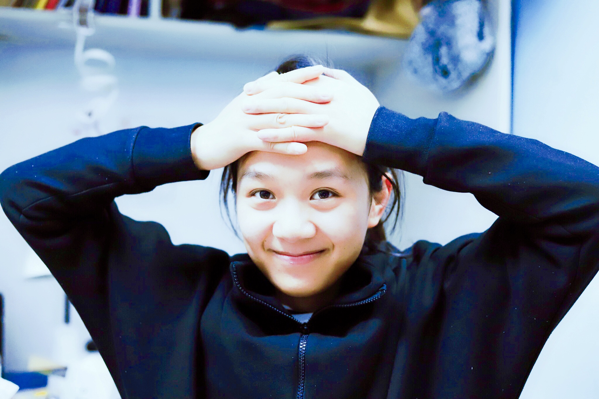

Qi Qi @ University of Iowa
|  | Qi Qi / 齐琪 Ph.D. Student |
News
- June 2019: Attending ICML-2019 with a workshop paper "Doubly Robust Crowdsourcing" at HILL-2019! All are welcome!
Education
I am a PHD candidate from machine learning and optimization group of University of Iowa . My supervisor is Prof. Tianbao Yang. Before I joined UIowa, I received my master degree in University of Science and Technology of China under the supervision of Prof. Thomas Weise.
Research Interests
Research is for fun. I'm doing research in machine learning and its applications, especially in designing new algorithms with theoretical guarantee and applying them to cutting-edge interdisciplinary researches. Currently I'm interested in crowdsourcing, online learning, and active learning.
Manuscript
- Doubly Robust Crowdsourcing. [ArXiv] [Full version]
Chong Liu and Yu-Xiang Wang.
Publication
- Modeling optimization algorithm runtime behavior and its applications. [Paper]
Qi, Qi, Thomas Weise, and Bin Li.
Proceedings of the Genetic and Evolutionary Computation Conference Companion. ACM, 2017.
Academic Service
- Journal Reviewer
JMLR
- Conference Reviewer
AAAI-2020, NeurIPS-2019, ICML-2019
Teaching Assistant
- CS 8 Introduction to Computer Science
University of California, Santa Barbara, Spring 2019
Instructor: Prof. Ziad Matni
- CS 165A Artificial Intelligence
University of California, Santa Barbara, Winter 2019
Instructor: Prof. Yu-Xiang Wang
- CS 40 Foundations of Computer Science
University of California, Santa Barbara, Fall 2018
Instructor: Prof. Peter Cappello
Selected Awards
- Excellent Master Thesis, Department of Computer Science and Technology, Nanjing University, June 2018.
- National Undergraduate Scholarship, Ministry of Education of China, Nov. 2012.
Photography
I’m an avid amateur photographer, specifically in landscape and nature photography. I have photographic homepage on 500px.com.